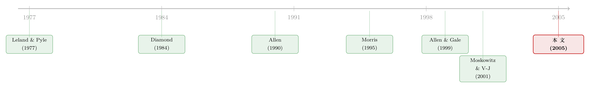

银行没有信息优势，凭什么还活着？——一座连接乐观与悲观的「信念之桥」
本文读的是 Coval & Thakor (2005, Journal of Financial Economics)：作者搭了一个金融中介理论，里面的中介没有任何信息处理或监督上的优势——它能存在，仅仅因为它在「过度乐观的创业者」和「过度悲观的储户」之间，是唯一一个既乐观到愿意去买筛选技术、又悲观到真的会去用它的人。中介的本质不是「比别人懂得多」，而是一座让资金得以流动的信念之桥。
1 引言：当「银行是恐龙」遇上一个反常的事实
先讲一句被引用到烂的话。比尔·盖茨说过：「Banks are dinosaurs（银行是恐龙）。」前花旗 CEO John Reed 说得更狠：「总有一天，银行会变成一段应用程序里的一行代码。」
这两句话背后，是一整套漂亮的理论。金融中介为什么存在？从 Leland 和 Pyle (1977) 到 Diamond (1984)，再到 Ramakrishnan 和 Thakor (1984)，主流答案高度一致：因为存在信息问题——事前的私人信息（逆向选择）或事后的道德风险。银行的价值，在于它比分散的市场更便宜地处理信息、更有效地监督借款人。这套「信息范式」服务了我们几十年，实证上也有 James (1987)、Lummer 和 McConnell (1989) 撑腰。
但本文一上来就抛出一个让人不舒服的悖论。
信息技术飞速进步，金融数据越来越公开，分析工具越来越廉价——Freddie Mac 的贷款筛选软件你都能从网上下载。如果中介的本钱是「信息优势」，那么这个优势正在被技术蚕食。于是现有理论的预测是：金融中介应该随着信息技术的进步而衰落。
可现实呢？银行在美国这样信息高度发达的经济体里活得好好的。更扎心的是另一个方向的事实：按照 Boyd 和 Smith (1996, 1998) 的逻辑，新兴市场借款人净资产低、道德风险严重，本应给中介留出更大的舞台——金融中介占 GDP 的比重在新兴市场理应更高。可数据偏偏相反：金融中介深度（贷款/GDP）和经济发展水平、增长速度都是正相关的（见 King 和 Levine, 1993；Rajan 和 Zingales, 1998）。穷国不是中介太多，而是太少。
于是一个自然的问题是：能不能有一种金融中介理论，让中介根本不需要任何信息优势，却依然内生地出现？而且这个理论还能顺手解释上面那些反常的事实？
这正是 Coval 和 Thakor 想干的事。他们的答案不在「信息」里，而在「信念」里。
2 三种人，一个借不出去的经济
模型的世界里只有三种风险中性的人，区别只在于他们对同一件事的先验信念（prior beliefs）不同：
- 乐观者（optimist, O）：高估好结果的概率；
- 悲观者（pessimist, P）：低估好结果的概率；
- 理性人（rational, R）：估得刚刚好。
这里有个要紧的解读。作者强调，你既可以把他们看成「乐观/悲观/理性」三类非理性程度不同的人，也可以把他们统统看成理性、只是先验不同的贝叶斯决策者。Morris (1995) 早就论证过，先验异质性并不与理性或贝叶斯决策理论冲突——这一点是整篇文章的「免责声明」，也是它能同时被解读为行为模型与理性模型的关键。（关于异质信念如何被写进现代资产定价，可参见《你卖出时，谁还在场？——把「需求分歧」写进资产定价》。）
经济的物理设定很简单。每个人手里有一个单期项目，需要投资 \(I\)，但每个人手里只有 \(0.5I\)——天生缺一半的钱。项目的净现值（NPV）要么是 \(N>0\)，要么是 \(-N\)，且假设 \(0.5I
关键的第一块砖：项目的无条件期望 NPV 是负的。
$$ sN-[1-s]N<0\quad\Longleftrightarrow\quad s<0.5 $$
也就是说，一个理性人绝不会盲投。要想让投资变得值得，必须先做一件事——筛选（screening）。
筛选技术对所有人开放、成本相同：固定成本为零，每筛一个项目的可变成本是 \(V>0\)。技术是有噪声的，它发出信号 \(c\in\{g,b\}\)（好/坏），准确率为 \(f\)：
$$ \Pr(c=i\mid \text{project } i)=f>1-s_p,\qquad \Pr(c=j\mid \text{project } i)=1-f $$
注意 \(f>1-s_p\) 这个设定，顺带保证了 \(f>0.5\)——信号至少是「有信息含量」的。
接着，一个自然的问题是：看到一个「好」信号之后，你该把概率往上修多少？这就是贝叶斯更新。
3 模型：信念，如何被一个信号「掰弯」
筛到 \(c=g\) 之后，理性人对「项目是好的」的后验概率是：
$$ \Pr(\text{project } g\mid c=g)=\frac{fs}{fs+[1-f][1-s]}\equiv\hat{s}>s $$
我们把这条最核心的更新式拆开来看——它是整篇文章的「发动机」，因为后面所有契约的可行性，都取决于一个「好」信号能把信念抬到多高：
对应地，看到「坏」信号后的后验是 \(\hat{r}\equiv \dfrac{[1-f]s}{[1-f]s+f[1-s]} $$
\bar{s}N\equiv[2\hat{s}-1]N>0\;(\text{当 }c=g),\qquad \bar{r}N\equiv[2\hat{r}-1]N<0\;(\text{当 }c=b)
$$ 把三类人的先验代进去，就有 \(\bar{s}_o>\bar{s}>\bar{s}_p\) 和 \(\bar{r}_o>\bar{r}>\bar{r}_p\)。这一串不等式，就是后面那座「桥」的桥墩。 由此得到全文第一个枢纽——引理 1（Lemma 1），它说了三件事： 第三点是魔鬼藏身之处。把它写成假设 1（Assumption 1）： $$
s<0.5\quad\text{and}\quad s_o>f>1-s_p
$$ 中间那个 \(s_o>f\) 意味深长：乐观者太乐观了，乐观到了筛选对他毫无意义的地步——反正不管信号是好是坏，他都要投。一个永远不会因为坏消息而改变主意的人，去做筛选纯属浪费那 \(V\)。换句话说，乐观者没有动力去用筛选技术，哪怕技术摆在他面前。 再补两条假设，逻辑链就闭合了： 到这里，三类人的「分工」已经呼之欲出：乐观者想当创业者（因为只有他觉得项目够香），但他不会筛选；悲观者愿意筛、筛得也可信，但他太悲观、根本不想投；理性人居中。问题是——怎么把他们撮合到一起？ 先看反面：如果没有中介会怎样？ 每个乐观创业者缺 \(0.5I\)，得从外部融资。假设乐观者们抱团成一个「联盟（coalition）」，凑钱、自己筛项目，然后去找理性人投另外那 \(0.5I\)。 但这里有一道激励的死结。回忆假设 1：乐观者根本不会真的去花 \(V\) 筛选（他太乐观，筛了也白筛）。而 \(V\) 是否真的被花掉，只有负责筛选的人自己私下知道。于是理性人会这样推理：你们这帮乐观创业者嘴上说会筛，可你们既没动力、又无法证明自己真筛了；而由式 \(sN-[1-s]N<0\)，不筛的项目期望 NPV 是负的——所以我不投。 这就是命题 2（Proposition 2）：没有中介时，只要创业者足够乐观，理性人和悲观者都不会出钱；乐观者联盟顶多自融资，但因为人人只有一半的钱，最多只能资助联盟里一半的项目。经济卡在了一个低投资的陷阱里。 这个结果妙就妙在，它把命题 1（那个「只要够乐观、所有乐观项目都能融到资」的无摩擦基准）整个掀翻了。在没有激励与融资约束的童话世界里，乐观是好事；可一旦你把「钱不够」和「筛选不可观测」这两条现实约束加回来，过度的乐观反而成了融资的诅咒——因为它摧毁了创业者「我会认真筛选」的可信承诺。 注意这里的因果方向：钱流不动，不是因为信息不对称（技术人人可得、成本相同），而是因为「最想投的人」恰恰是「最不愿意筛选、因而最不可信」的人。问题出在信念与激励的错配，而不是谁掌握了更多信息。 于是，真正关键的一步出现了。 让理性人站出来，组成一个金融中介。它做两件事： 第一，向悲观者（储户）融资，但卖给他们「无风险债（riskless debt）」。 悲观者之所以不愿投，是因为他对项目支付的信念太低。可如果中介承诺给他一份与项目好坏无关的固定偿付（由引理 1，被筛中、\(c=g\) 的项目即便按悲观先验算 NPV 也为正，足以覆盖这份无风险偿付），那么悲观者的「过度悲观」就被绕过了——他拿到的现金流，压根不依赖于他对项目的判断。这正是为什么作者说，中介把储户的钱「桥」了过来：它发的，可以直接解读为银行存款。 第二，中介自己持有「初级、有风险的债（junior risky debt）」（也可以理解成优先股，或对项目而言同构于风险贷款的索取权）。这份有风险的索取权，给了中介一笔正好补偿其筛选成本 \(V\) 的报酬——这就让中介真的有动力去花 \(V\) 筛选（这也是假设 4「\(V\) 足够小」的用处：只要中介的参与约束满足，它的激励相容约束就自动满足）。 把两件事拼起来，魔法就完成了： 每个人自选（self-select）了自己的位置。所有乐观创业者都拿到了融资。一个提供「筛选服务」的金融中介就这样内生地冒了出来——尽管它在筛选上毫无任何特殊优势，技术对谁都一样、成本对谁都相同。 这就是标题里「信念之桥」的全部含义：中介的贡献，不在于信息处理或监督技能，而在于它既能可信地承诺去高效筛选（乐观者和悲观者都做不到），又能设计出让悲观者愿意掏钱的契约。它站在乐观者「过高的信念」与悲观者「过低的信念」之间，让资金得以从储户流向借款人。 请把这个图景和 Diamond (1984)、Ramakrishnan 和 Thakor (1984) 对照一下：在那些经典模型里，均衡中的中介在监督或筛选上拥有成本优势；而在这里，中介的成本优势是零。作者还顺手给出几个新解读：银行资本（bank capital） 的作用不再只是抑制资产替代型道德风险，而是保证银行本身的可行性——而且悲观者占比越高，这份中介资本就越重要。这套框架同样能装下风险投资：VC「深度介入被投企业、因而对资产了解极深」（Gorman 和 Sahlman, 1989；Gompers 和 Lerner, 1998）正与「中介因为筛选了项目、所以比别人更懂项目质量」的含义吻合。 回到开头那个悖论：为什么信息技术进步了，银行却没死？因为在这个理论里，银行从来就不是靠信息优势活着的——它靠的是在异质信念之间搭桥。技术让信息更便宜，并不会拆掉这座桥。 把这篇文章放回它的家谱里看，故事会更清楚。 第一代是信息范式的奠基：Leland 和 Pyle (1977) 用「信号」解释了融资结构与中介的起源，Diamond (1984) 的「委托监督（delegated monitoring）」与 Ramakrishnan 和 Thakor (1984) 的「信息可靠性」把中介牢牢钉在了「信息/监督优势」这根柱子上，Allen (1990) 则从信息市场的角度切入。这一代的共识是：没有信息摩擦，就没有中介存在的理由。  接着，一条「异质信念」的暗线浮了上来。 Morris (1995) 为「先验不同也可以是理性的」正了名，给后来所有把信念差异写进模型的工作发了通行证。真正与本文短兵相接的是 Allen 和 Gale (1999)：他们也研究「意见分歧」下新技术的融资，但结论恰恰相反——他们认为中介化融资会低配创新项目，股票市场因为更善于聚合分歧意见而更优。Coval 和 Thakor 偏偏反着说：创新项目带来的意见分歧，恰恰可能是中介化融资得以兴起的原因。同一时期 Manove 和 Padilla (1999) 也用了「乐观创业者」的设定，但他们假设掉了悲观者，讨论的是银行竞争如何让放贷过于激进。 然后，行为金融提供了弹药：Moskowitz 和 Vissing-Jorgenson (2001) 记录了创业者「高风险、低回报」的私募股权溢价之谜，为「创业者系统性过度乐观」这一关键假设提供了经验支撑。（关于经理人/创业者的乐观与过度自信如何被量化，可参见《经理人的「过度自信」，其实藏在波动率里》。） 本文 (2005) 就站在这两条线的交汇处：它把「异质信念」这条暗线，焊到了「金融中介为何存在」这个老问题上，给出一个不需要信息优势的答案。它和 Merton 和 Bodie (2004) 的「功能与结构金融观」一脉相承——金融机构是为回应市场摩擦与行为偏差而内生涌现的。 Q：这和经典的 Diamond (1984) 到底差在哪？不都是「中介去筛选/监督」吗？ 差在「为什么是中介、而不是别人来做」。Diamond 里，均衡中的中介拥有监督的成本优势，靠规模分散把委托监督做得比市场便宜。本文里中介的筛选成本和所有人完全一样，它的存在理由是激励与信念的撮合——只有它「既乐观到愿意买技术、又悲观到真会用技术」。把信息优势设为零，是这篇文章故意为之的「极端实验」。 Q：把人分成「乐观/悲观/理性」，是不是太行为了，经不起理性派的质疑？ 作者早有准备。引用 Morris (1995)，他们论证这套设定等价于「理性但先验不同」的贝叶斯模型——只要假设信息太复杂、学习太慢（这也是 Allen 和 Gale 的处理），先验长期不收敛就完全合理。所以这个模型可以两头解读，行为派和理性派都能接受。 Q：为什么悲观者愿意把钱交给中介，而不是直接拒绝一切投资？ 因为中介卖给他的是无风险债，偿付与项目好坏无关。由引理 1，被筛中且 \(c=g\) 的项目即便用悲观者自己的先验算，NPV 也是正的（\(\bar{s}_pN>0\)），足以覆盖这份固定偿付。悲观者的「过度悲观」被契约结构绕过了——他不需要相信项目，只需要相信那份固定现金流。 Q：结论说「中介深度在发达国家更高」，模型怎么解释？ 关键变量是悲观者的占比。本文指出，中介资本的重要性随悲观者比例上升而上升，而当悲观者太多、或制度让无风险债的承诺不可信时，这座桥就搭不起来——新兴市场恰恰可能卡在「桥墩不稳」上。这给「为什么穷国中介太少」提供了一个与道德风险范式完全不同的解释。 Q：最反直觉的一点是什么？ 是过度乐观反而阻碍融资。直觉上乐观应该让人更敢投、更容易融资（命题 1 的童话世界正是如此）。但一旦加入「筛选不可观测」，乐观者因为「连坏信号都不信」而失去了筛选动力，也就失去了「我会认真筛」的可信承诺，结果谁都不敢借钱给他（命题 2）。乐观在这里是诅咒，不是祝福。 Q：把这个「中介」叫银行合适，还是叫 VC 更合适？ 两者都可以，这正是模型的弹性所在。储户买无风险债 = 银行存款；中介买的风险索取权同构于风险贷款。但文章的「味道」更像 VC 或银行的初创融资部门——因为 VC「深度介入、对资产了解极深」的特征，与「中介因筛选而比别人更懂项目」的含义高度吻合。作者甚至说，巴菲特也可以被解读为这个模型里的中介。 1. 「信念之桥」在公司债一级市场的检验。
【经济故事】把「乐观发行人 + 悲观投资者 + 中介承销商」的三方结构，搬到公司债承销上：承销商持有的「skin in the game」（如超额配售、稳定操作中的多头/空头敞口）是否扮演了本文中介所持「风险初级债」的角色，让它有动力去真正尽调？
【可行性】中。需要 TRACE 成交数据 + Mergent FISD 发行特征 + 承销协议里的稳定操作条款。识别上可借鉴本博客《把债券「超额配售」给你：承销商在悄悄做空什么？》的思路，难点在于度量承销商真实承担的风险敞口。 2. 悲观者占比与跨国中介深度。
【经济故事】本文预测「中介重要性随悲观者比例上升」。能否用调查数据（如各国家庭对股市的悲观/参与度、对违约的预期）构造一个「悲观度」代理，检验它与中介深度（贷款/GDP）的横截面关系？
【可行性】中。需要跨国的信念调查（如 Gallup、各国央行家庭金融调查）+ 世界银行金融发展指标。识别是软肋——悲观度与制度质量高度共线，纯横截面回归很难讲清因果，最好找一个冲击信念但不直接动制度的外生事件。 3. 外资持有人作为「信念套利者」。
【经济故事】当本国投资者过度悲观、本国创业者过度乐观时，外资是否扮演了本文「理性中介」的角色——既不像本地人那样悲观、又有能力去筛？外资进入能否打通本地卡死的融资？
【可行性】中。可结合本博客《外资真是「蝗虫」吗？》的跨国设定，用资本账户开放或可投资度（investability）变化作为外生冲击，看本地高分歧/高乐观行业的融资与投资是否随外资进入而改善。 4. 信息技术冲击下的中介存活率——一个证伪练习。
【经济故事】本文的核心论断是「中介不靠信息优势活着」。那么一次显著降低信息成本的技术冲击（如征信数据公开、信用评分软件普及），按信息范式应让中介衰退，按本文应无影响。谁对？
【可行性】高。可用某国征信系统上线、或某类信用评分技术普及作为 DiD 冲击，比较「信息密集型」与「信念密集型/创新型」贷款的中介份额变化。数据（贷款层面 + 时间）相对可得，识别相对干净。 5. 银行资本的「可行性」角色 vs.「道德风险」角色。
【经济故事】本文给银行资本一个新功能：保证银行本身的可行性（而非仅抑制资产替代）。能否设计一个检验，把「资本→可行性」和「资本→抑制冒险」两条渠道分开？
【可行性】低到中。两条渠道的实证预测高度重叠，需要找到一个只影响「桥墩稳定性」（如悲观储户占比、无风险债承诺可信度）而不直接改变冒险激励的变量，现实中这样的工具很难找。 最后是我作为评述者的判断。 贡献上，这篇文章的价值在于它的「极端干净」：把中介的信息优势直接设为零，逼着你去想——如果不靠信息，中介还能靠什么存在？答案「信念之桥」既新颖又自洽，而且一箭三雕地回应了三个反常事实（信息技术进步中介不死、发达国家中介更深、新兴市场中介反而不足）。它把异质信念这条本属于资产定价的暗线，成功引到了中介理论里，这是真正的概念性贡献。 对识别（理论自洽性）的担忧有两点。其一，整座桥高度依赖一组精心调好的不等式——尤其是 \(s_o>f\)（乐观者乐观到放弃筛选）与 \(f>1-s_p\)（信号足够强、连悲观者都肯信好消息）这对「夹逼」。一旦参数稍稍偏离这个窗口，三类人的分工就会塌掉；模型的稳健性，本质上是参数区间的稳健性，作者用假设 1–4 把它锁死，但现实里这些信念参数能否落在这么窄的带子里，是个经验问题。其二，「无风险债真的无风险」依赖于「被筛中项目按悲观先验也正 NPV」，这把很多现实里的尾部风险（系统性冲击、筛选技术本身失灵）挡在了门外——而 2008 年告诉我们，恰恰是那些被当成「无风险」的中介负债出了事。 后续想看到的，是把这套纯理论拽到数据面前。这是一篇 2005 年的纯理论文章，作者自己也坦承很多含义「至今未被检验（thus far untested）」。二十年过去，征信数据公开、金融科技放贷、跨境资本流动都提供了一批漂亮的自然实验，足以去检验它最硬核的那个论断——中介，到底是不是靠信息优势活着的。如果不是，那盖茨那句「银行是恐龙」，恐怕还得再等很久才会应验。
4 为什么没有中介，钱就是流不动
5 中介登场：一座连接乐观与悲观的桥
6 文献脉络
评论与延伸（Q&A + 研究方向）
(a) 几个可能的疑问
(b) 几个可能的研究问题与提案
参考文献